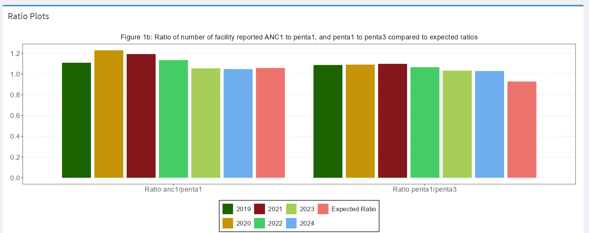

5 Section 1: Health facility data quality assessment
This section focuses on inspecting the quality of the health facility data by considering the following standard indicators: reporting completeness, outliers, internal consistency among the correlated indicators and data completeness. The final output for this section is the Overall data quality score.
5.1 Numerators Assessment
5.1.1 Rationale: Scientific basis for the analysis
Routinely reported health facility data are an important data source for health indicators at facility and population level. The data are reported by health facilities on events such as immunizations given, or live births attended. As with any data, quality is an issue. Data needs to be checked to consider completeness of reporting by health facilities, identify extreme outliers and internal consistency. A standard reporting method for data quality allows assessment of progress over time.
5.1.2 Approach: Description of analytical steps
The analysis of the monthly data by district for 2019-2024 is used to assess annual data quality using the following standard indicators:
Table 1: Health facility data quality assessment: numerators
| Indicator | Numerator | Denominator | Interpretation | |
|---|---|---|---|---|
| 1 | {: colspan=“3”} Completeness of monthly facility reporting | |||
| 1 | Completeness of monthly facility reporting | Statistics for 1a and 1b are based on the mean of 4 reporting forms (ANC, delivery, immunization, OPD) | Essential indicator for all analyses | |
| 1a | % of expected monthly facility reports (national) | N of monthly facility reports received | Total N of facility reports expected (usually 12* N of facilities with the service) | Reporting rates over 90% are good; changes in reporting completeness over time affects trend analysis |
| 1b | % of districts with completeness of facility reporting >= 90% | N of districts with at least 90% monthly reporting completeness in a year | Total N of districts | Can be used to identify districts with low reporting rates in multiple years |
| 1c | % of districts with no missing monthly values in a year for any of the 4 forms | N of districts with no missing values for any of the 4 forms in a year | Total N of districts | Additional indicator, is not used to compute the overall data quality score |
| 2 | Extreme outliers | The statistics for 2a and 2b are based on the mean of outliers in ANC, delivery, PNC, vaccination, OPD and IPD indicators | N of indicators included in the mean may vary according to countries | |
| 2a | % of monthly values that are not extreme outliers1 (national) | N of monthly values that are not extreme outliers in a specific year | Total N of monthly values (usually 12 * N years to be analyzed) | At least 99% of monthly data expected not to be an extreme outlier; consider reasons |
| 2b | % of districts with no extreme outliers in a year | N of districts with no extreme outliers in a specific year | Total N of districts | At least 90% of districts should have no extreme outliers at all; consider reasons |
| 3 | Consistency of annual reporting | |||
| 3a | ANC1 to penta1 ratio in the reported data (national) | N of ANC1 reported | N of penta1 reported | National ratio within an expected range (1.05 to 1.10 if survey coverage ANC1 and penta1 are the same – see below) |
| 3b | Penta1 to penta3 ratio in the reported data (national) | N of penta1 reported | N of penta3 reported | National ratio within an expected range, based on the survey results (see below) |
| 3c | % of districts with ANC1-penta1 ratio between 1.0 and 1.5 | N of districts with ratios within the expected range | Total N of districts | For districts there is more variation in the ratio: a wider range is considered |
| 3d | % of districts with penta1-penta3 ratio between 1.0 and 1.5 | N of districts within the expected range | Total N of districts | For districts there is more variation in the ratio: a wider range is considered |
| 4 | Summary of performance | |||
| Annual data quality score (mean 1a, 1b, 2a,2b, 3c,3d) |
There is often an inconsistency between antenatal and immunization data, even though we can argue that the two should be consistent. To examine the association between ANC1 and penta1 is particularly informative. To compute and interpret indicators 3a and 3b the following considerations need to be made:
ANC1 to penta1 ratio
We can compute an expected ratio ANC1 to penta1 based on assumptions about mortality between early to mid pregnancy and early infancy and survey data on coverage of ANC1 and penta1 in the population:
- Consider the mortality between the first ANC visit and the first pentavalent vaccination.
Assuming that ANC1 takes place at about 20 weeks or 4-5 months of pregnancy and penta1 at 6-8 weeks postpartum, we assume a pregnancy loss (abortion) after the ANC1 visit of 3%, a stillbirth rate of 2%, a twinning rate of 1.5% and neonatal mortality rate before the penta1 of 3% then the difference between the numbers of ANC1 and penta1 should be: 1 – 0.03 – 0.02 + 0.015 – 0.03 = 0.935. This corresponds with a ANC1 to penta1 ratio of 1/0.935 = 1.07.
- Actual population coverage of ANC1 and penta1 will also need to be considered, using the surveys.
The expected ratio (the number of ANC1/ number of penta1 in facilities) is 1.07 * (ANC1 coverage in the survey/penta1 coverage in the survey).
If coverage for ANC1 and penta1 are the same, then the ratio is 1.07 (1.07 * 1/1). But if, for example, the last survey shows that ANC1 coverage was 90% and penta1 coverage was 95%, then the expected ratio becomes 1.07 * (.90/.95) = 1.01.
- For the national ANC1 to penta1 ratio a range of plus or minus 0.05 outside this computed ratio is considered acceptable. If the ratio is outside this range, this should be flagged, and possible explanations discussed.
Penta1 to penta3 ratio
We can compute an expected penta1 to penta3 ratio based on the most recent survey:
The main factor determining the penta1 to penta3 ratio, which are recommended at 6 and at 14 weeks of age, is the actual drop-out rate between penta1 and penta3, as mortality plays a limited role.
Population coverage rates from the latest survey are used to determine the expected penta1 to penta3 ratio in the facility data. For instance, if penta1 coverage is 95% and penta3 coverage is 85%, we expect that ratio to be 0.95/0.85 = 1.12.
Also, here a range of plus or minus 0.05 is considered acceptable for the assessment of the facility data.
Report:
Points to consider for the interpretation
Is there a data quality pattern by year for which there is an > explanation? (include the explanation)
Are there certain regions or other subnational units that are > particularly problematic?
Are there certain reporting forms or services (e.g., antenatal care, > labour and delivery, immunization) that are problematic?
Is there good consistency between reported numbers of ANC1 and > penta1?
The Figure below produced in the ShinyApp shows the ratios for all six years (2019-2024) and the expected value. It will be important to reflect on large differences (e.g., more than 0.10 or 10%.).

5.2 Implementation: Conducting analysis in the Shiny App
The various data quality aspects ( Reporting completeness, Outlier detection,Internal Consistency Data completeness, Ratios calculation, Overall quality score) are are assessed in the Data quality section of the Shiny App. The app will automatically compute the overall data quality score based on the indicators described above.
5.3 Table 1: Health facility data quality assessment: numerators
| Indicator | Numerator | Denominator | Interpretation |
|---|---|---|---|
| 1 | Completeness of monthly facility reporting | {: colspan=“2”} Statistics for 1a and 1b are based on the mean of 4 reporting forms (ANC, delivery, immunization, OPD) | |
| 1a | % of expected monthly facility reports (national) | N of monthly facility reports received | Total N of facility reports expected (usually 12 × N of facilities with the service) |
| 1b | % of districts with completeness of facility reporting ≥ 90% | N of districts with at least 90% monthly reporting completeness in a year | Total N of districts |
| 1c | % of districts with no missing monthly values in a year for any of the 4 forms | N of districts with no missing values for any of the 4 forms in a year | Total N of districts |
| 2 | Extreme outliers | {: colspan=“2”} The statistics for 2a and 2b are based on the mean of outliers in ANC, delivery, PNC, vaccination, OPD, and IPD indicators. (Note: Number of indicators included in the mean may vary according to countries) | |
| 2a | % of monthly values that are not extreme outliers (national) | N of monthly values that are not extreme outliers in a specific year | Total N of monthly values (usually 12 × N years to be analyzed) |
| 2b | % of districts with no extreme outliers in a year | N of districts with no extreme outliers in a specific year | Total N of districts |
| 3 | Consistency of annual reporting | ||
| 3a | ANC1 to penta1 ratio in the reported data (national) | N of ANC1 reported | N of penta1 reported |
| 3b | Penta1 to penta3 ratio in the reported data (national) | N of penta1 reported | N of penta3 reported |
| 3c | % of districts with ANC1-penta1 ratio between 1.0 and 1.5 | N of districts with ratios within the expected range | Total N of districts |
| 3d | % of districts with penta1-penta3 ratio between 1.0 and 1.5 | N of districts within the expected range | Total N of districts |
| 4 | Summary of performance | {: colspan=“2”} Annual data quality score (mean 1a, 1b, 2a, 2b, 3c, 3d) |
An extreme outlier is defined as a monthly value that is 5 times the median absolute deviation (MAD) from monthly median value for a particular year.↩︎